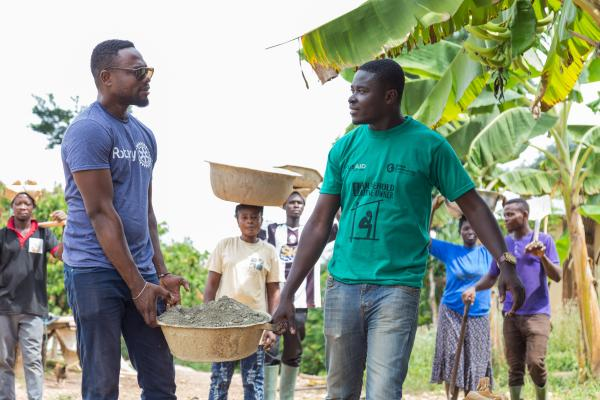

Нашата мисия
Ротари Интернешънъл е глобална хуманитарна организация с повече от 1.4 милиона членове в над 46 000 клуба по целия свят. Ние сме посветени на обслужването на другите, насърчаването на честността и напредването на световното разбирателство, добра воля и мир.
Четирипосочният тест на нещата, които мислим, казваме или правим: Истина ли е? Справедливо ли е за всички засегнати? Ще изгради ли добра воля и по-добри приятелства? Ще бъде ли полезно за всички засегнати?
Хърбърт Дж. Тейлър, Ротарианец (1932)
Основана на от Пол Харис в Чикаго, Ротари се разрасна от един клуб до световна мрежа от обществени лидери и професионалисти.
Глобално въздействие

Как правим разлика
- Обществени проекти: Решаваме местни и международни проблеми чрез устойчиви проекти, базирани на общността
- Помощ при бедствия: Ротари предоставя бърз отговор и дългосрочна подкрепа за възстановяване на общности, засегнати от природни бедствия
- Младежки програми: Чрез програмите Ротаракт, Интеракт и младежки обмен развиваме утрешните лидери
- Мирни инициативи: Стипендиите за мир на Ротари обучават лидери да станат ефективни катализатори за мир
- Здравни кампании: От изкореняване на полиомиелита до проекти за чиста вода, подобряваме здравните резултати в глобален мащаб
Членство и структура
Типове клубове на Ротари
- Традиционни клубове на Ротари
- Събират се седмично, обикновено по време на обяд или вечерни часове, фокусирайки се върху местната обществена услуга и приятелство
- Ротаракт клубове
- Членове в студентска възраст и млади професионалисти (на възраст 18-30 години), които развиват лидерски и професионални умения, докато служат на общностите си
- Интеракт клубове
- Ученици от средно училище (на възраст 12-18 години), които участват в проекти за обществена услуга и международни обмени
- Сателитни клубове
- По-малки, гъвкави групи, които се събират в различно време или на различни места, за да отговорят на различни графици
- Е-клубове
- Онлайн клубове, които се събират виртуално, позволявайки на членове от различни географски места да се свържат и да служат
Нашите членове идват от всеки континент и почти всяка нация, представлявайки разнообразни професии, култури и произход, обединени от общ ангажимент за служба.
ПолиоПлюс: Нашата водеща инициатива
От г. Ротари е в челните редици на глобалните усилия за изкореняване на полиомиелита. СЗО съобщава, че случаите на полиомиелит са намалели с 99.9%, откакто Ротари и нейните партньори стартираха Глобалната инициатива за изкореняване на полиомиелита.
Ангажиментът на Ротари за свят без полиомиелит е непоколебим. Няма да се успокоим, докато не достигнем до всяко последно дете с ваксината срещу полиомиелит.
Изявление на Ротари Интернешънъл относно изкореняването на полиомиелита
До момента Ротари е допринесла с повече от 2.7 милиарда долара и безброй доброволчески часове за борбата с полиомиелита.